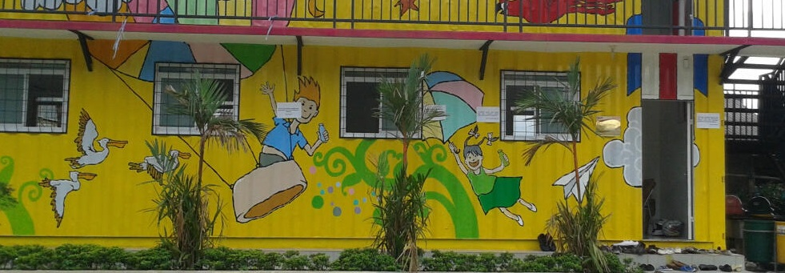
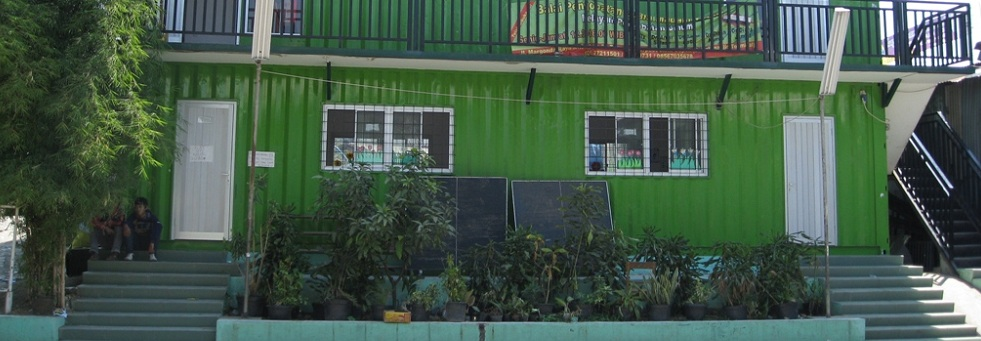

Previous
- 
-

- 
Gelar Cipta Wirausaha Muda Tupperware-MASTER
Tupperware mengadakan Gelar Cipta Wirausaha Muda Tupperware di sekolah Master, bertujuan untuk menambahkan semangat dan ilmu tentang wirausaha kepada anak-anak yang meraih pendidikan di Master.Baca Selengkapnya...
Peresmian Lab Komputer Multimedia
Peresmian Lab Komputer Multimedia oleh Alcatel Lucent dan World Education dengan dukungan internet dari ICON+Baca Selengkapnya...
Sekolah Master dalam lensa kamera Univ. Sahid Jakarta
Alasan diangkatnya sekolah master di dalam pameran fotografi universitas Sahid Jakarta adalah fokus sekolah tersebut sebagai pendidikan alternatif bagi mereka yang terlanjur atau rawan putus sekolah di kalangan anak2 atau remaja di usianya.Baca Selengkapnya...